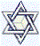

Adam Kadmon is the pattern upon which the Crown Diamond is built. Composed of straight lines, its
major intersections and points of termination are known as "sephirot"-- as "brightnesses," literally, or as "spheres"
 or "emanations," traditionally.
The name is a cognate of the Hebrew word
sefer, meaning "scroll," or "book." Adam Kadmon is both the symbol upon which the Crown Diamond is based and the key by which it is approached for understanding. A succinct symbol
or "emanations," traditionally.
The name is a cognate of the Hebrew word
sefer, meaning "scroll," or "book." Adam Kadmon is both the symbol upon which the Crown Diamond is based and the key by which it is approached for understanding. A succinct symbol
 of the Logos--
of the "Word," its components are fully replicated in the Crown Diamond diagram four times
in a circular arrangement in which its upper portions overlap, one sphere upon another
(compare Ezekiel, Chapter 1).
of the Logos--
of the "Word," its components are fully replicated in the Crown Diamond diagram four times
in a circular arrangement in which its upper portions overlap, one sphere upon another
(compare Ezekiel, Chapter 1).
In the diagram's entirety then, the Crown Diamond is an image of the Merkava-- of the Chariot of Elohim, the vehicle of the Holy Breath; for the whole represents the unified, mystical Body of Yahushua, HaMashiyach. The open center formed by the overlaps-- by the court at the center of the four, interlocking Adam Kadmons-- is therefore understood to represent the Bosom of Avraham, in which is hidden the path leading through the diamond's center and on, beyond the breadth that extends above the heavenly throne of Yahushua, the Angel of the Presence, into the Realm of Pure Spirit (Rev. 3:21; John 1:18, 14:9-11, 16:28; Eccles. 12:7; 1 Kin. 8:27; 1 Tim. 6:16). As Angel of the Presence, Yahushua is the interface between God and created realms. These magnified aspects of the mystery will be a focus of the presentation on the Crown Diamond, itself.
As a symbol of the Logos-- of the Foundation Stone, the Cornerstone-- Adam Kadmon is defined as the spiritual projection of the Complete Adam
(1 Cor. 15:45-49). Since HaShem declares
through Yahushua
 that
he is the First, and also the Last: the First, and also
with
the last
(Rev. 22:13; Is. 48:12; 41:4), and that our lives are to be conformed to
the pattern made visible by the life of
Y'shúa
(Matt. 1:16, Rom. 8:29), we understand that
we, as Sons of Man
spread across the vast intervals of history, must also lift
up within our bodily members the pattern of the life of
Yahushua, the beginning of the
creation of
Elohim (Matt1:1). To deny his presence in our lives is to
condemn ourselves; for whoever denies that Yahushua
is
come in the flesh
IS antichrist"
(2 John 7; Matt. 28:20).
that
he is the First, and also the Last: the First, and also
with
the last
(Rev. 22:13; Is. 48:12; 41:4), and that our lives are to be conformed to
the pattern made visible by the life of
Y'shúa
(Matt. 1:16, Rom. 8:29), we understand that
we, as Sons of Man
spread across the vast intervals of history, must also lift
up within our bodily members the pattern of the life of
Yahushua, the beginning of the
creation of
Elohim (Matt1:1). To deny his presence in our lives is to
condemn ourselves; for whoever denies that Yahushua
is
come in the flesh
IS antichrist"
(2 John 7; Matt. 28:20).
We have defined Adam Kadmon as the spiritual projection of the Complete Adam. It's understood, therefore, that the symbol speaks simultaneously of both the flesh and the spirit (Gen. 1:27; John 4:24). The beginning of its study, whether or not one is familiar with the symbol, involves discovery of the nature of Elohim through the creation parable of the flesh; and the fruition of its study is the knowledgeable, priestly sacrifice of the body's faculties to God's Spirit: to the end that every thought, word, and deed becomes a conscious offering to Ruach haElohim, the Breath of la (2 Cor. 10:5). Because the carnal mind in the isolation of error is enmity with God (Rom. 8:7), this study can be successfully undertaken only in the name-- in the spiritual position --of the true and faithful witness, Y'shúa (John 14:6), the man called the messiah (Matt. 1:16).
The first Adam fell by allowing the flesh to predominate the Spirit, that he might accompany Eve in the eons of judgment that would come because of her deception by the reasonings of the carnal mind (Gen. 3:13; 1 Tim. 2:14). In partaking with Eve, Adam demonstrated perfection in the law of love (Rom. 13:10; John 15:13): he was willing to lose his life-- to invest it, in faith that he would ultimately aid in the redemption of the one sheep for which he was responsible (John 10:11; Amos 3:6-7).
 Eve had yet to be separated from Adam when the law
of the tree of the knowledge of good and evil was given
(Gen. 2:7-9, 21-24). She therefore
learned of the law from Adam by instruction, and not from Elohim by
direct revelation. As consequence, she may not have been able to understand the scope of Adam's report
(Is. 53). Thus Adam, in his decision to share with her the death to come by also partaking of the forbidden fruit, rightly accepted responsibility for her deception.
Eve had yet to be separated from Adam when the law
of the tree of the knowledge of good and evil was given
(Gen. 2:7-9, 21-24). She therefore
learned of the law from Adam by instruction, and not from Elohim by
direct revelation. As consequence, she may not have been able to understand the scope of Adam's report
(Is. 53). Thus Adam, in his decision to share with her the death to come by also partaking of the forbidden fruit, rightly accepted responsibility for her deception.
The answer to the question by Elohim-- "What has thou done?"-- is not fully answered by Adam's words, "I did eat," nor even by the apostle Paul's words concerning the significance of Adam's decision. The answer has come by the littles through every word of scripture given unto man throughout the ages and, no doubt, beyond: unto the farthest reaches of eternity. Adam had sworn an oath, establishing covenant with bone of his bone and flesh of his flesh; and by honoring that agreement-- even against the faces of mortality: by agreeing to join Eve in the process that would lead to their "full extension" (a Hebrew concept of "death"), Adam and Eve became as sacrifices: the praiseworthy progenitors of all mankind.
Before the separation of Eve from Adam, Adam walked with Elohim, thinking, "We are." He continued in that awareness upon awakening to Eve's separation, including in that mindset the additional thought, "Thou art also of us." In contrast, Eve was born to the thought, "Thou art; I am; we are; and God is." The dynamics of the Fall were therefore inherent in the processes of creation itself, in that Creation necessitated awareness of self: an awareness that, lingered upon, can be misconstrued as primacy of self, opening mankind to the logical basis for the error of pride, which comes by forgetfulness of unity within the isolation of individuality.
|
 |
||
|
site |
Font |
book |